Horror Environments 693 production files · 81 with thumbnails. Tier: A animated · B rigged · C static · D unsupported. LOCAL RENDER = actual model rendered with three.js; OFFICIAL = creator image.
Human Characters Supernatural Characters Animals Residential Environments Urban & Public Environments Natural Environments Horror Environments Vehicles Props and Accessories Animation Libraries Index KK-DUNGEON — Dungeon Remastered 1.0 (203) Kay Lousberg (KayKit) · CC0 1.0 Universal (Public Domain Dedication) · KayKit stylized low-poly; gradient/atlas texture
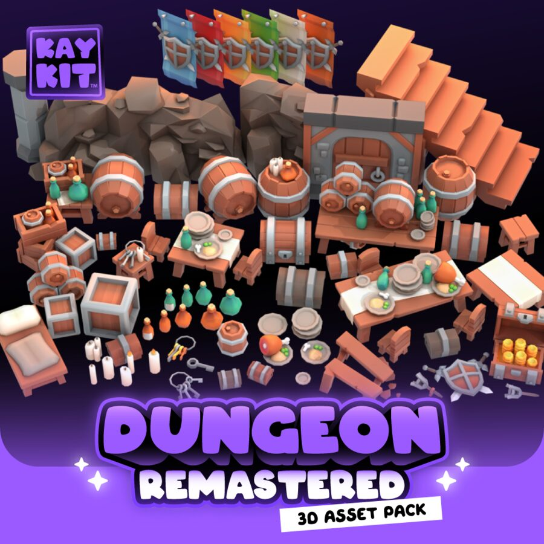
OFFICIAL PREVIEW
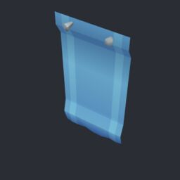
banner_blue
AG-KK-DUNGEON-0001
KK-DUNGEON · GLB C
LOCAL RENDER
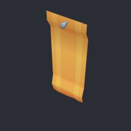
banner_thin_yellow
AG-KK-DUNGEON-0034
KK-DUNGEON · GLB C
LOCAL RENDER
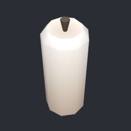
candle
AG-KK-DUNGEON-0067
KK-DUNGEON · GLB C
LOCAL RENDER
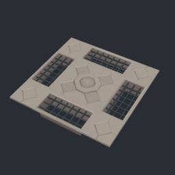
floor_tile_extralarge_grates_open
AG-KK-DUNGEON-0100
KK-DUNGEON · GLB C
LOCAL RENDER
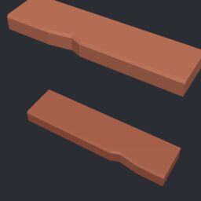
shelves
AG-KK-DUNGEON-0133
KK-DUNGEON · GLB C
LOCAL RENDER
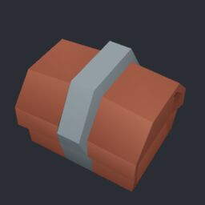
trunk_medium_A
AG-KK-DUNGEON-0166
KK-DUNGEON · GLB C
LOCAL RENDER
197 more files (no thumbnail) AG-KK-DUNGEON-0002 · banner_brown · glb · C
KK-HALLOW — Halloween Bits 1.0 (63) Kay Lousberg (KayKit) · CC0 1.0 Universal (Public Domain Dedication) · KayKit stylized low-poly; gradient/atlas texture
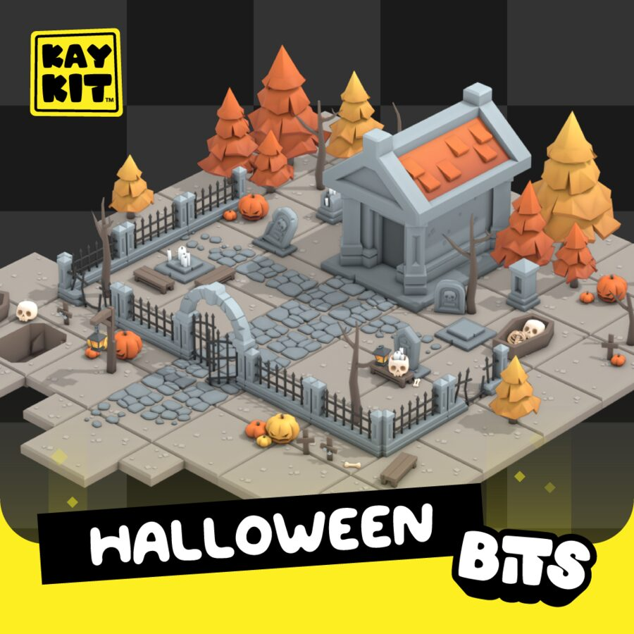
OFFICIAL PREVIEW
arch
AG-KK-HALLOW-0001
KK-HALLOW · GLTF C
LOCAL RENDER
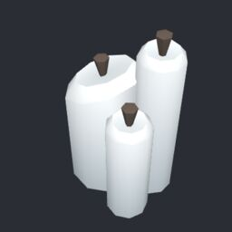
candle_triple
AG-KK-HALLOW-0011
KK-HALLOW · GLTF C
LOCAL RENDER
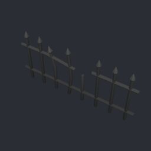
fence_seperate_broken
AG-KK-HALLOW-0021
KK-HALLOW · GLTF C
LOCAL RENDER
lantern_hanging
AG-KK-HALLOW-0031
KK-HALLOW · GLTF C
LOCAL RENDER
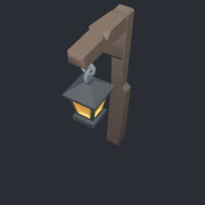
post_lantern
AG-KK-HALLOW-0041
KK-HALLOW · GLTF C
LOCAL RENDER
pumpkin_orange_jackolantern
AG-KK-HALLOW-0044
KK-HALLOW · GLTF C
LOCAL RENDER
pumpkin_yellow_jackolantern
AG-KK-HALLOW-0047
KK-HALLOW · GLTF C
LOCAL RENDER
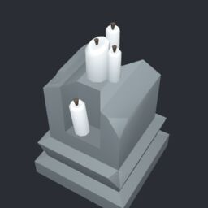
shrine_candles
AG-KK-HALLOW-0051
KK-HALLOW · GLTF C
LOCAL RENDER
55 more files (no thumbnail) AG-KK-HALLOW-0002 · arch_gate · gltf · C
KK-SPOOK — Spooktober Seasonal Pack 1.1 (legacy) (46) Kay Lousberg (KayKit) · CC0 1.0 Universal (Public Domain Dedication) · KayKit stylized low-poly; gradient/atlas texture
candleBundle
AG-KK-SPOOK-0003
KK-SPOOK · GLB C
LOCAL RENDER
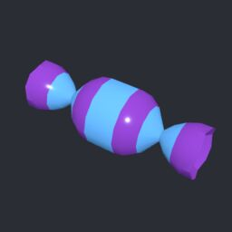
candyC
AG-KK-SPOOK-0010
KK-SPOOK · GLB C
LOCAL RENDER
coffinB_top
AG-KK-SPOOK-0017
KK-SPOOK · GLB C
LOCAL RENDER
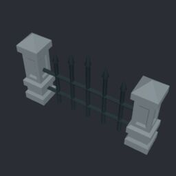
fenceSingle
AG-KK-SPOOK-0024
KK-SPOOK · GLB C
LOCAL RENDER
jackolantern_big
AG-KK-SPOOK-0026
KK-SPOOK · GLB C
LOCAL RENDER
jackolantern_small
AG-KK-SPOOK-0027
KK-SPOOK · GLB C
LOCAL RENDER
pathCobbled
AG-KK-SPOOK-0031
KK-SPOOK · GLB C
LOCAL RENDER
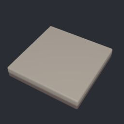
tileLarge_graveyard
AG-KK-SPOOK-0038
KK-SPOOK · GLB C
LOCAL RENDER
38 more files (no thumbnail) AG-KK-SPOOK-0004 · candleLarge · glb · C
KN-DUNGEON — Modular Dungeon Kit 2.0 (39) Kenney (kenney.nl) · CC0 1.0 Universal (Public Domain Dedication) · Kenney stylized low-poly; shared colormap atlas
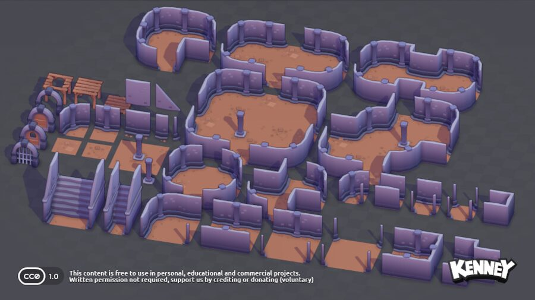
OFFICIAL PREVIEW
corridor-corner
AG-KN-DUNGEON-0001
KN-DUNGEON · GLB C
LOCAL RENDER
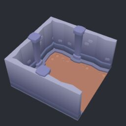
corridor-wide-end
AG-KN-DUNGEON-0007
KN-DUNGEON · GLB C
LOCAL RENDER
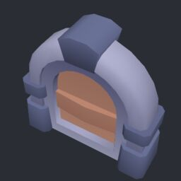
gate-door
AG-KN-DUNGEON-0013
KN-DUNGEON · GLB A
LOCAL RENDER
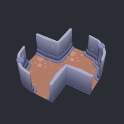
room-small-variation
AG-KN-DUNGEON-0019
KN-DUNGEON · GLB C
LOCAL RENDER
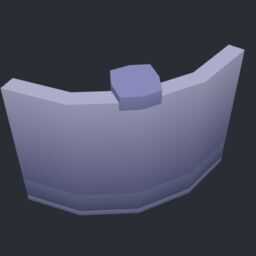
template-corner
AG-KN-DUNGEON-0025
KN-DUNGEON · GLB C
LOCAL RENDER
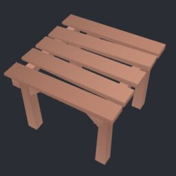
template-floor-layer-raised
AG-KN-DUNGEON-0031
KN-DUNGEON · GLB C
LOCAL RENDER
33 more files (no thumbnail) AG-KN-DUNGEON-0011 · corridor · glb · C
KN-GRAVE — Graveyard Kit 5.0 (86) Kenney (kenney.nl) · CC0 1.0 Universal (Public Domain Dedication) · Kenney stylized low-poly; shared colormap atlas
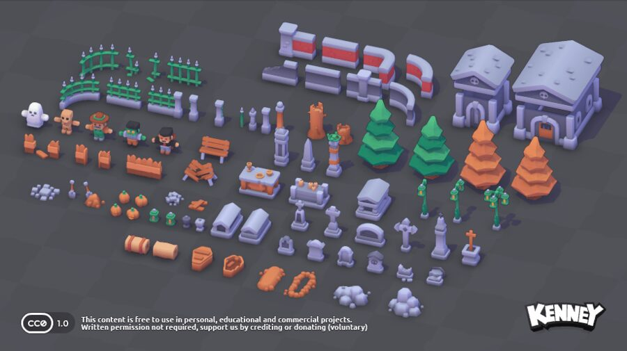
OFFICIAL PREVIEW
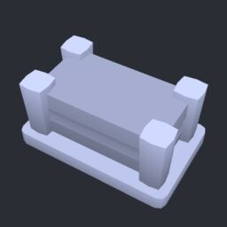
altar-stone
AG-KN-GRAVE-0001
KN-GRAVE · GLB C
LOCAL RENDER
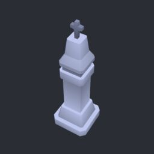
cross-column
AG-KN-GRAVE-0020
KN-GRAVE · GLB C
LOCAL RENDER
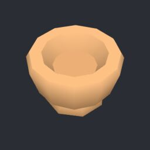
detail-bowl
AG-KN-GRAVE-0034
KN-GRAVE · GLB C
LOCAL RENDER
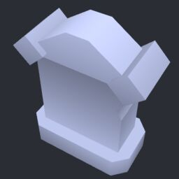
gravestone-decorative
AG-KN-GRAVE-0048
KN-GRAVE · GLB C
LOCAL RENDER
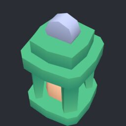
lantern-candle
AG-KN-GRAVE-0062
KN-GRAVE · GLB C
LOCAL RENDER
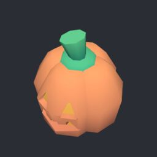
pumpkin-tall-carved
AG-KN-GRAVE-0076
KN-GRAVE · GLB C
LOCAL RENDER
80 more files (no thumbnail) AG-KN-GRAVE-0002 · altar-wood · glb · C
KN-MINIDUN — Mini Dungeon 2.0 (28) Kenney (kenney.nl) · CC0 1.0 Universal (Public Domain Dedication) · Kenney stylized low-poly; shared colormap atlas
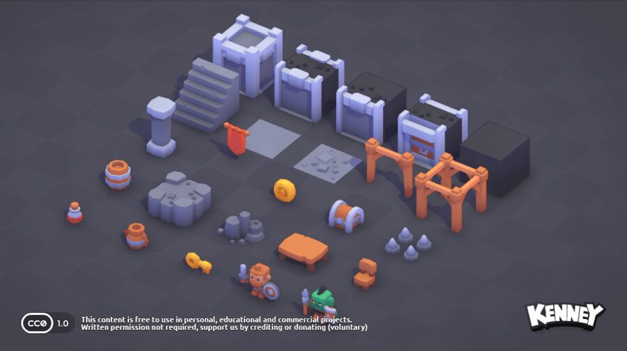
OFFICIAL PREVIEW
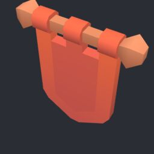
banner
AG-KN-MINIDUN-0001
KN-MINIDUN · GLB C
LOCAL RENDER
coin
AG-KN-MINIDUN-0007
KN-MINIDUN · GLB C
LOCAL RENDER
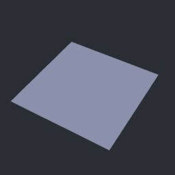
floor
AG-KN-MINIDUN-0011
KN-MINIDUN · GLB C
LOCAL RENDER
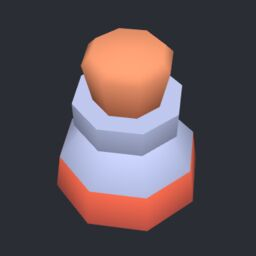
potion
AG-KN-MINIDUN-0015
KN-MINIDUN · GLB C
LOCAL RENDER
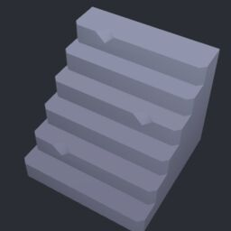
stairs
AG-KN-MINIDUN-0019
KN-MINIDUN · GLB C
LOCAL RENDER
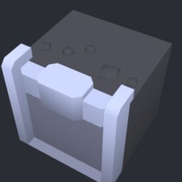
wall-half
AG-KN-MINIDUN-0023
KN-MINIDUN · GLB C
LOCAL RENDER
22 more files (no thumbnail) AG-KN-MINIDUN-0002 · barrel · glb · C
OGA-APOCBLD — 3D Apocalyptic Building / City (CC0) (10) majadroid (OpenGameArt user) · CC0 1.0 Universal (Public Domain Dedication) · Community low-poly (mixed style)
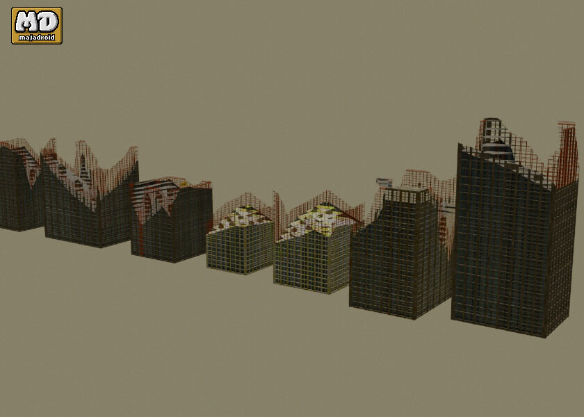
OFFICIAL PREVIEW
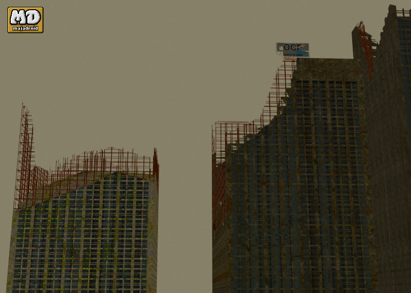
OFFICIAL PREVIEW
billboards-4-types
AG-OGA-APOCBLD-0001
OGA-APOCBLD · FBX C
LOCAL RENDER
building-01
AG-OGA-APOCBLD-0002
OGA-APOCBLD · FBX C
LOCAL RENDER
building-02
AG-OGA-APOCBLD-0003
OGA-APOCBLD · FBX C
LOCAL RENDER
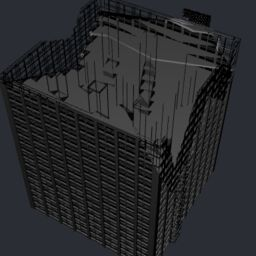
building-03
AG-OGA-APOCBLD-0004
OGA-APOCBLD · FBX C
LOCAL RENDER
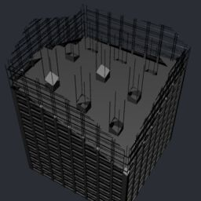
building-04
AG-OGA-APOCBLD-0005
OGA-APOCBLD · FBX C
LOCAL RENDER
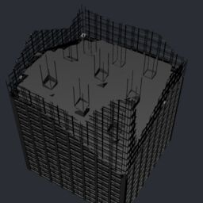
building-05
AG-OGA-APOCBLD-0006
OGA-APOCBLD · FBX C
LOCAL RENDER
4 more files (no thumbnail) AG-OGA-APOCBLD-0007 · building-06 · fbx · C
OGA-CEMETERY — Cemetery (6) savino (OpenGameArt user) · CC0 1.0 Universal (Public Domain Dedication) · Community low-poly (mixed style)
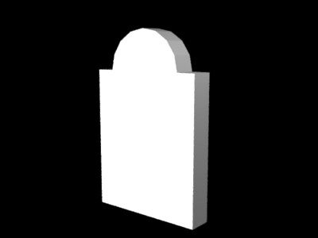
OFFICIAL PREVIEW
grave1
AG-OGA-CEMETERY-0001
OGA-CEMETERY · OBJ C
LOCAL RENDER
grave2
AG-OGA-CEMETERY-0002
OGA-CEMETERY · OBJ C
LOCAL RENDER
grave3
AG-OGA-CEMETERY-0003
OGA-CEMETERY · OBJ C
LOCAL RENDER
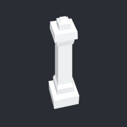
grave4
AG-OGA-CEMETERY-0004
OGA-CEMETERY · OBJ C
LOCAL RENDER
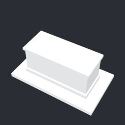
grave5
AG-OGA-CEMETERY-0005
OGA-CEMETERY · OBJ C
LOCAL RENDER
grave6
AG-OGA-CEMETERY-0006
OGA-CEMETERY · OBJ C
LOCAL RENDER
OGA-HALLOWKIT — Low-Poly Halloween Kit (74) assetquest (OpenGameArt user) · CC0 1.0 Universal (Public Domain Dedication) · Community low-poly (mixed style)
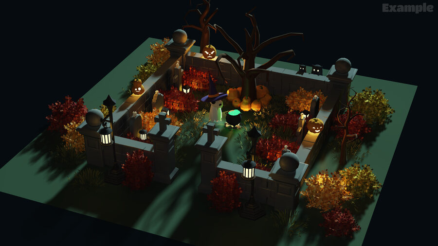
OFFICIAL PREVIEW
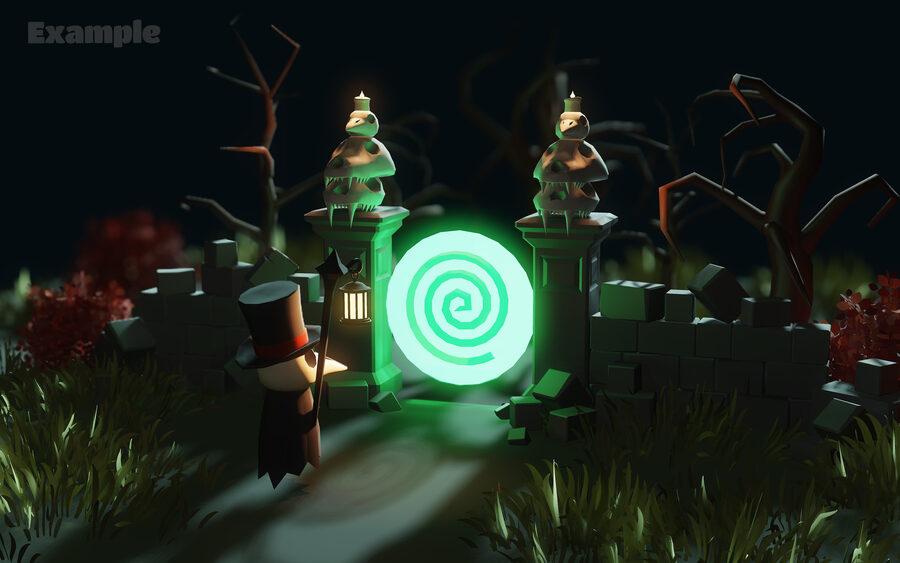
OFFICIAL PREVIEW
Assembled_Character_1
AG-OGA-HALLOWKIT-0001
OGA-HALLOWKIT · FBX A
LOCAL RENDER
Assembled_Character_2
AG-OGA-HALLOWKIT-0002
OGA-HALLOWKIT · FBX A
LOCAL RENDER
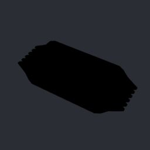
Candy_1b
AG-OGA-HALLOWKIT-0013
OGA-HALLOWKIT · FBX A
LOCAL RENDER
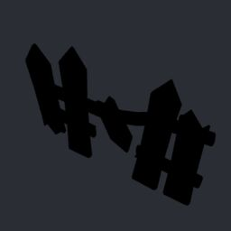
Fence_3
AG-OGA-HALLOWKIT-0025
OGA-HALLOWKIT · FBX A
LOCAL RENDER
Ghost_1
AG-OGA-HALLOWKIT-0026
OGA-HALLOWKIT · FBX A
LOCAL RENDER
Ghost_2
AG-OGA-HALLOWKIT-0027
OGA-HALLOWKIT · FBX A
LOCAL RENDER
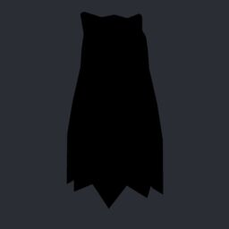
Ghost_3
AG-OGA-HALLOWKIT-0028
OGA-HALLOWKIT · FBX A
LOCAL RENDER
Ghost_4
AG-OGA-HALLOWKIT-0029
OGA-HALLOWKIT · FBX A
LOCAL RENDER
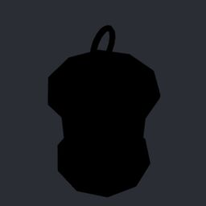
Lantern_2
AG-OGA-HALLOWKIT-0037
OGA-HALLOWKIT · FBX A
LOCAL RENDER
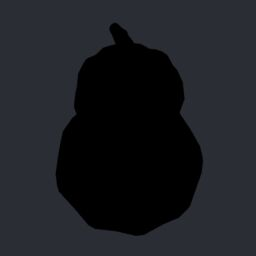
Pumpkin_3
AG-OGA-HALLOWKIT-0049
OGA-HALLOWKIT · FBX A
LOCAL RENDER
Shrub_3a
AG-OGA-HALLOWKIT-0061
OGA-HALLOWKIT · FBX A
LOCAL RENDER
63 more files (no thumbnail) AG-OGA-HALLOWKIT-0003 · Assembled_Pumpkin_Basket · fbx · A
OGA-HORRORMAP — Horror sci-fi 3d map kit (15) dogchicken (OpenGameArt user) · CC BY 3.0 · Community low-poly (mixed style)
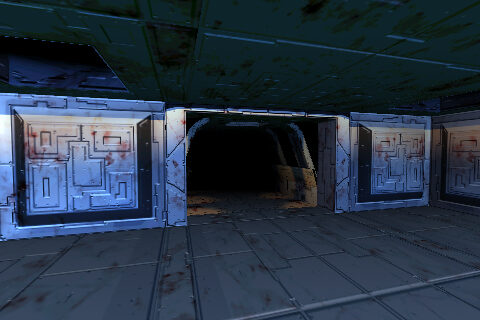
OFFICIAL PREVIEW
cross1
AG-OGA-HORRORMAP-0001
OGA-HORRORMAP · OBJ C
LOCAL RENDER
cross3
AG-OGA-HORRORMAP-0003
OGA-HORRORMAP · OBJ C
LOCAL RENDER
rock1_0
AG-OGA-HORRORMAP-0005
OGA-HORRORMAP · OBJ C
LOCAL RENDER
rock1_2
AG-OGA-HORRORMAP-0007
OGA-HORRORMAP · OBJ C
LOCAL RENDER
room
AG-OGA-HORRORMAP-0009
OGA-HORRORMAP · OBJ C
LOCAL RENDER
room3
AG-OGA-HORRORMAP-0011
OGA-HORRORMAP · OBJ C
LOCAL RENDER
9 more files (no thumbnail) AG-OGA-HORRORMAP-0004 · cover · obj · C
OGA-NECROPOLY — Free NecroPoly Graveyard Halloween Exterior Kit (75) emaceart (OpenGameArt user) · CC BY 4.0 · Community low-poly (mixed style)
Comp_Merged
AG-OGA-NECROPOLY-0001
OGA-NECROPOLY · FBX C
LOCAL RENDER
EA_Arch_Wall02_Ruin_01b
AG-OGA-NECROPOLY-0013
OGA-NECROPOLY · FBX C
LOCAL RENDER
EA_Arch_Wall03_Ruin_01b
AG-OGA-NECROPOLY-0025
OGA-NECROPOLY · FBX C
LOCAL RENDER
EA_Bld_Monument_3b
AG-OGA-NECROPOLY-0037
OGA-NECROPOLY · FBX C
LOCAL RENDER
EA_Exterior_Kerb_Moss_01f
AG-OGA-NECROPOLY-0049
OGA-NECROPOLY · FBX C
LOCAL RENDER
EA_Pumpkin_Piece_01a
AG-OGA-NECROPOLY-0061
OGA-NECROPOLY · FBX C
LOCAL RENDER
69 more files (no thumbnail) AG-OGA-NECROPOLY-0002 · EA01_Env_Road_Cobble_01a · fbx · C
QT-DUNGEON — Modular Dungeon (May 2019) (48) Quaternius · CC0 1.0 Universal (Public Domain Dedication) · Quaternius stylized low-poly
Arch
AG-QT-DUNGEON-0001
QT-DUNGEON · FBX C
LOCAL RENDER
Barrel
AG-QT-DUNGEON-0009
QT-DUNGEON · FBX C
LOCAL RENDER
Cobweb2
AG-QT-DUNGEON-0017
QT-DUNGEON · FBX C
LOCAL RENDER
Fence_Straight_Modular
AG-QT-DUNGEON-0025
QT-DUNGEON · FBX C
LOCAL RENDER
Stairs_Modular
AG-QT-DUNGEON-0033
QT-DUNGEON · FBX C
LOCAL RENDER
Trap_empty
AG-QT-DUNGEON-0041
QT-DUNGEON · FBX C
LOCAL RENDER
42 more files (no thumbnail) AG-QT-DUNGEON-0002 · Arch_Door · fbx · C